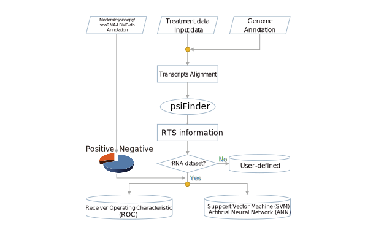
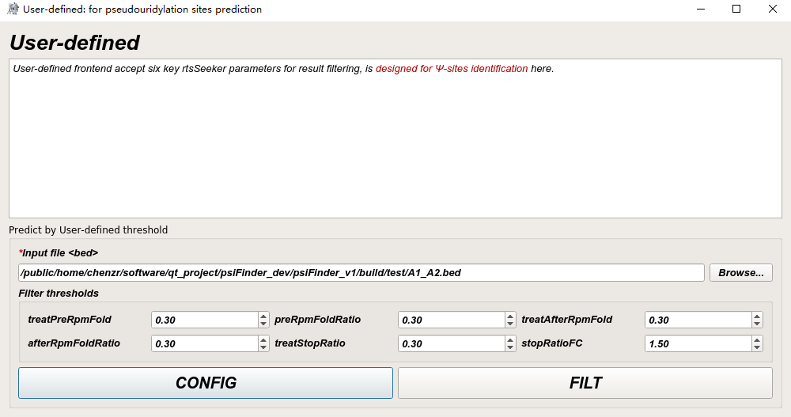
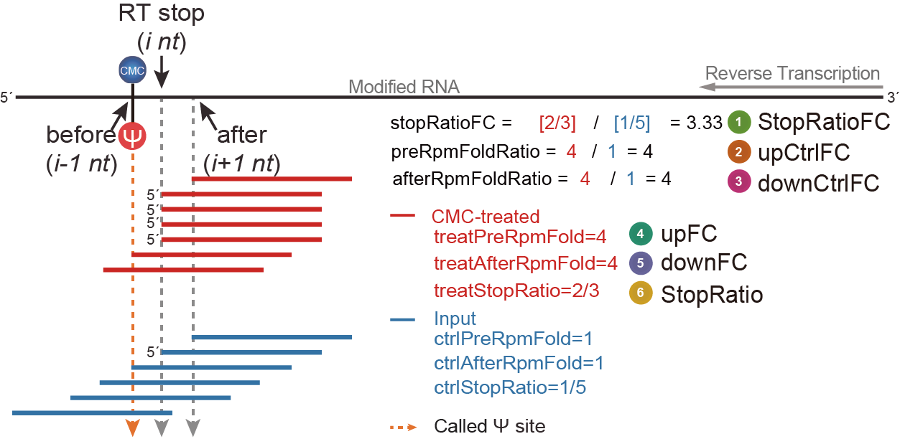

Ψ-sites Identification
We developed a core C program–rtsSeeker (as the core of psiFinder), for seeking the reverse transcriptase stop sites (RTS) and output the overall RTS information.
To build rRNA datasets for overall Ψ identification, we first download files from three databases: Modomics, snOPY, and snoRNABase. Since human 5.8s rRNA (chr21:8212571-8212727), 18s rRNA (chr21:8209631-8211499), and 28s rRNA (chr21:8213888-8218941) have multiple copies in the genome, we extracted one of the copies for subsequent analyses. We calculate and gain the relative position of Ψ sites on each rRNA. Centering on these sites and extending 10 nt of upstream and downstream, we then extract 21 nt sequences in bulk and map them to human genome (-v 0 -a -m 1000 –best –strata) using bowtie. A total of 96 Ψ sites were obtained in the above copy and used as a positive subset of the dataset to perform ROC evaluation or SVM modeling. Meanwhile, using bedtools (v2.30.0) intersect tools (-v -s), the sites that were identified as not Ψ sites were extracted from the above copy and used as a negative subset of the dataset.
Input
Users should choose to upload files in bam format for both CMC-input and CMC-treated groups. Upload reference genome file in fasta format and set the output path of directory. Input the file name for the output information (i.e. file name with .bed suffix).
Note
STAR input/treat alignment Uniquely mapped reads % should be greater than 30%, or the rtsSeeker may fail to calculate the valid information.
Optional
Multiple option are provided for rtsSeeker argument control.
customize rtsSeeker argument
if your want to customize the rtsSeeker argument, do not check get all psi information or check plot ROC option. Once START, psiFinder will run 3.0_rtsSeeker.sh.
#!/bin/bash
Help() {
echo
"rtsSeeker_wrap.sh example:
bash rtsSeeker_wrap.sh -c rtsSeeker command -g genome
"
}
usage() { # Function: Print a help message.
echo "Usage: $0 [ -h help] [ -c cmd ] [ -g genome]" 1>&2
}
exit_abnormal() { # Function: Exit with error.
usage
exit 1
}
while getopts ":h:c:g:" options; do
case "${options}" in
h|:)
usage
Help
exit 0
;;
c)
cmd=${OPTARG}
if ! [[ -n $cmd ]] ; then
echo "You didn't input the cmd"
fi
;;
g)
genome=${OPTARG}
if ! [[ -n $genome ]] ; then
echo "You didn't input the genome"
fi
;;
\?) # incorrect option
echo "Error: -${OPTARG} Invalid option"
exit_abnormal
;;
esac
done
shift $(($OPTIND - 1))
date ## echo the date at start
echo "Starting: one rtsSeeker job is starting..."
echo "Normal rtsSeeker mode: rtsSeeker start..." > rtsSeeker_wrap.log
if [ ! -f "${genome}.fai" ]
then
echo "generate fai file" >> rtsSeeker_wrap.log
samtools faidx $genome
else
echo "fai file exist" >> rtsSeeker_wrap.log
fi
eval $cmd >> rtsSeeker_wrap.log 2>&1 &
wait
echo 'Genome-wise pseudouridylated sites identification is done by rtsSeeker!' >> rtsSeeker_wrap.log
echo "rtsSeeker_wrap.sh running is done!"
echo -e "\n $(tput setaf 3)Succeed: one rtsSeeker job is finished!$(tput sgr 0)"
exit 0 # Exit normally.
get all psi information
If this option is checked, Detail argument input will be blocked and psiFinder will run get_all.sh.
#! /bin/bash
if [[ $# -ne 4 ]]
then
echo 'Usage: ./'$0 ' genome.fa treatment.bam input.bam out.bed'
exit 1
fi
genome=$1
treatment=$2
input=$3
out=$4
outFileName=${out%.bed}
echo "rtsSeeker get All mode: rtsSeeker start..."
if [ ! -f "${genome}.fai" ]
then
echo "generate faifile"
samtools faidx $genome
else
echo "faifile exist"
fi
$(dirname "$0")/rtsSeeker --fa $genome --fai ${genome}.fai --treat $treatment --input $input -p 1.5 -t 0 -r 0 -M 1 --gene $(dirname "$0")/hg38.gencode.v30.tRNA.refseqNcRNA.geneAnno.bed12 -f 0 -m 0 -s -w 20 -o ${outFileName}_all.bed 2>${outFileName}_all_rtsSeeker.log
awk 'FS=OFS="\t" {if($1~/^chr[0-9|a-z|A-Z]*$/ && $10=="T" && $14>5){print $0}}' ${outFileName}_all.bed > ${outFileName}_filt.bed
awk 'FS=OFS="\t" {$25=sprintf("%.2f",$25);$27=sprintf("%.2f",$27);$28=sprintf("%.2f",$28);$30=sprintf("%.2f",$30);$31=sprintf("%.2f",$31);$33=sprintf("%.2f",$33)}1' ${outFileName}_filt.bed > tmp && mv tmp ${outFileName}_filt.bed
echo -e "All rtsSeeker result in ${outFileName}_all.bed"
plot ROC
If this option is checked, Detail argument input will be blocked and psiFinder will run 3.1_rtsSeeker_roc.sh.
#! /bin/bash
if [[ $# -ne 4 ]]
then
echo 'Usage: '$0 ' genome.fa treatment.bam input.bam out.bed'
exit 1
fi
genome=$1
treatment=$2
input=$3
out=$4
outFileName=${out%.bed}
echo "rtsSeeker ROC mode: rtsSeeker start..."
if [ ! -f "${genome}.fai" ]
then
echo "generate faifile"
samtools faidx $genome
else
echo "faifile exist"
fi
# ROC
echo "$(dirname "$0")/rtsSeeker --fa $genome --fai ${genome}.fai --treat $treatment --input $input -p 1.5 -t 5 -r 0.05 -M 1 --gene $(dirname "$0")/hg38.gencode.v30.tRNA.refseqNcRNA.geneAnno.bed12 -f 1 -m 0 -s -n -w 20 -o ${outFileName}_roc_all.bed 2>${outFileName}_roc_all_rtsSeeker.log" > ${outFileName}_rtsSeeker_cmd.log
$(dirname "$0")/rtsSeeker --fa $genome --fai ${genome}.fai --treat $treatment --input $input -p 1.5 -t 5 -r 0.05 -M 1 --gene $(dirname "$0")/hg38.gencode.v30.tRNA.refseqNcRNA.geneAnno.bed12 -f 1 -m 0 -s -n -w 20 -o ${outFileName}_roc_all.bed 2>${outFileName}_roc_all_rtsSeeker.log # no -c remove duplicate change model to 1 and add gene annotation add -p 1.5
cat ${outFileName}_roc_all.bed > $out
awk 'FS=OFS="\t" {if($1~/^chr[0-9|a-z|A-Z]*$/ && $10=="T" && $14>10){print $0}}' ${outFileName}_roc_all.bed > ${outFileName}_roc_filt.bed
bedtools intersect -a ${outFileName}_roc_filt.bed -b $(dirname "$0")/hg38_human_chr21_rRNA_known_pseudoU_SingleSites.bed -s > ${outFileName}_knowpse.bed
bedtools intersect -a ${outFileName}_roc_filt.bed -b $(dirname "$0")/rrna_chr21.bed -s > ${outFileName}_rrna.bed
bedtools intersect -a ${outFileName}_rrna.bed -b $(dirname "$0")/hg38_human_chr21_rRNA_known_pseudoU_SingleSites.bed -s -v > ${outFileName}_notpse.bed
cat ${outFileName}_knowpse.bed |awk 'FS=OFS="\t" {print $0,"1"}' > ${outFileName}_knowpse.txt
cat ${outFileName}_notpse.bed |awk 'FS=OFS="\t" {print $0,"0"}' > ${outFileName}_notpse.txt
echo "getting roc_plot.txt"
cat ${outFileName}_knowpse.txt ${outFileName}_notpse.txt > ${outFileName}_roc_plot.txt
echo "generate ROC plot..."
nohup Rscript $(dirname "$0")/roc.r -f ${outFileName}_roc_plot.txt -t ${outFileName}_roc_filt.bed -r $(dirname "$0")/hg38_human_chr21_rRNA_known_pseudoU_SingleSites.bed -s $(dirname "$0")/hg38.psiU.SingleSites.bed -o ${outFileName} > ${outFileName}_roc_bestthres.log 2>&1 &
wait
cat ${outFileName}_roc_bestthres.log
mupdf-x11 ${outFileName}_six_variables_rRNA_violinplot.pdf &> /dev/null
mupdf-x11 ${outFileName}_roc_summary.pdf &> /dev/null
mupdf-x11 ${outFileName}_roc_best_evaluation.pdf &> /dev/null
echo "rtsSeeker ROC end"
echo -e "rtsSeeker ROC result in $(dirname ${outFileName}_roc_psi_prediction.bed)"
search psi sites
Correspond to rtsSeeker -U/--psi argument.
skip read with soft clip
Default is false, correspond to rtsSeeker -S/--soft argument.
normalized reads to the locus number
Correspond to rtsSeeker -n/--norm argument.
keep duplication
Default is false, correspond to rtsSeeker -c/--collapser argument.
Detail
Detailed argument for rtsSeeker output information control.
Usage: rtsSeeker [options] --fa <genome seq> --fai <fai file> --gene <bed12 gene file> --treat <treat alignments> --input <input alignments>
rtsSeeker: for seeking the reverse transcriptase stop sites
[options]
-v/--verbose : verbose information
-V/--version : rtsSeeker version
-h/--help : help informations
-U/--psi : search psi sites
-s/--strand : strand-specific[default=false]
-S/--soft : skip read with soft-clip[default=false]
-n/--norm : normalized reads to the locus number
-p/--pval : p-value[default=1.5]
-c/--collapser : keep duplication, deault is false
-M/--model <int> : model[0 for genome, 1 for gene, 2 for both, default=1]
--treat <string> : treatment file<BAM format>
--input <string> : input file<BAM format>
--gene <string> : gene file <BED12 format>
-o/--outfile <string> : output file
-t/--min-tag <double> : minimum tag number for each psi, default>=5.0 read
-r/--rpm <double> : minimum rpm value for each psi, default>=0.05
-f/--fold <int> : minimum fold-change[default>=1.0]
-m/--mfold <int> : minimum fold-change for stop-tag/mean-tag
-w/--window <int> : window size around the rts position[default=50]
-l/--min-len <int> : minimum length of reads, default=15
-L/--max-len <int> : maximum length of reads, default=1000
Identify Ψ-sites using different approaches
(1) SVM: Support Vector Machine
If SVM QT wideget is clicked and popouped:
press
Buildbuttor will runsvm.shandsvm_build_totalRNA.rto generate file with _SVM_model.RData suffix, which is the support vector model built by SVM algorithm.press
PREDICTbuttor will runsvm_predict_totalRNA.shandsvm_predict_totalRNA.rto generate file with _svm_psi_prediction.bed suffix, which is the candidate Ψ-sites predicted by SVM algorithm.
#! /bin/bash
if [[ $# -ne 4 ]]
then
echo 'Usage: '$0 ' input.bam treatment.bam genome.fa out.bed'
exit 1
fi
input=$1
treatment=$2
genome=$3
out=$4
outFileName=${out%.bed}
echo "rtsSeeker SVM mode: rtsSeeker start..."
if [ ! -f "${genome}.fai" ]
then
echo "generate faifile"
samtools faidx $genome
else
echo "faifile exist"
fi
echo "$(dirname "$0")/rtsSeeker --fa $genome --fai ${genome}.fai --treat $treatment --input $input -p 1.5 -t 5 -r 0.05 -M 1 --gene $(dirname "$0")/hg38.gencode.v30.tRNA.refseqNcRNA.geneAnno.bed12 -f 1 -m 0 -s -w 20 -o ${outFileName}_svm_all.bed 2>${outFileName}_svm_all_rtsSeeker.log" > ${outFileName}_svm_all_rtsSeeker.cmd # no -c remove duplicate
$(dirname "$0")/rtsSeeker --fa $genome --fai ${genome}.fai --treat $treatment --input $input -p 1.5 -t 5 -r 0.05 -M 1 --gene $(dirname "$0")/hg38.gencode.v30.tRNA.refseqNcRNA.geneAnno.bed12 -f 1 -m 0 -s -w 20 -o ${outFileName}_svm_all.bed 2>${outFileName}_svm_all_rtsSeeker.log # no -c remove duplicate
cat ${outFileName}_svm_all.bed > $out
awk 'FS=OFS="\t" {if($1~/^chr[0-9|a-z|A-Z]*$/ && $10=="T" && $14>10){print $0}}' ${outFileName}_svm_all.bed > ${outFileName}_svm_filt_totalRNA.bed
bedtools intersect -a ${outFileName}_svm_filt_totalRNA.bed -b $(dirname "$0")/hg38_human_chr21_rRNA_known_pseudoU_SingleSites.bed -s > ${outFileName}_knowpse.bed
bedtools intersect -a ${outFileName}_svm_filt_totalRNA.bed -b $(dirname "$0")/rrna_chr21.bed -s > ${outFileName}_rrna.bed
bedtools intersect -a ${outFileName}_rrna.bed -b $(dirname "$0")/hg38_human_chr21_rRNA_known_pseudoU_SingleSites.bed -s -v > ${outFileName}_notpse.bed
cat ${outFileName}_knowpse.bed |awk 'FS=OFS="\t" {print $0,"1"}' > ${outFileName}_knowpse.txt
cat ${outFileName}_notpse.bed |awk 'FS=OFS="\t" {print $0,"0"}' > ${outFileName}_notpse.txt
echo "getting roc_plot.txt"
cat ${outFileName}_knowpse.txt ${outFileName}_notpse.txt > ${outFileName}_svm_plot.txt
nohup Rscript $(dirname "$0")/svm_build_totalRNA.r -f ${outFileName}_svm_plot.txt -k ${outFileName}_svm_filt_totalRNA.bed -r $(dirname "$0")/hg38_human_chr21_rRNA_known_pseudoU_SingleSites.bed -s $(dirname "$0")/hg38.psiU.SingleSites.bed -o ${outFileName} > ${outFileName}_svm_evaluation_totalRNA.log 2>&1 &
wait
cat ${outFileName}_svm_evaluation_totalRNA.log
mupdf-x11 ${outFileName}_six_variables_rRNA_violinplot.pdf &> /dev/null
mupdf-x11 ${outFileName}_SVM_roc_test_data_plot.pdf &> /dev/null
mupdf-x11 ${outFileName}_svm_evaluation.pdf &> /dev/null
echo "total RNA: SVM program is done!"
echo -e "total RNA: SVM result in $(dirname ${outFileName}_svm_psi_prediction.bed)"
Note
All user input will be recorded in a plain text file with suffixes _svm_totalRNA_build.txt and _svm_totalRNA_predict.txt in psiFinder/config and help users to easily reload the previous config (by simply clicking ‘CONFIG’ button).
(2) ANN: Artificial Neural Network
If ANN QT wideget is clicked and popouped:
press
Buildbuttor will runann.shandann_build_totalRNA.rto generate file with _ANN_model.RData suffix, which is the artifical neuralnet model (resilient backpropagation with weight backtracking, two layers, each 12 neuron).press
PREDICTbuttor will runann_predict_totalRNA.shandann_predict_totalRNA.rto generate file with _ann_psi_prediction.bed suffix, which is the candidate Ψ-sites predicted by ANN algorithm.
#! /bin/bash
if [[ $# -ne 4 ]]
then
echo 'Usage: '$0 ' input.bam treatment.bam genome.fa out.bed'
exit 1
fi
input=$1
treatment=$2
genome=$3
out=$4
outFileName=${out%.bed}
echo "rtsSeeker ANN mode: rtsSeeker start..."
if [ ! -f "${genome}.fai" ]
then
echo "generate faifile"
samtools faidx $genome
else
echo "faifile exist"
fi
echo "$(dirname "$0")/rtsSeeker --fa $genome --fai ${genome}.fai --treat $treatment --input $input -p 1.5 -t 5 -r 0.05 -M 1 --gene $(dirname "$0")/hg38.gencode.v30.tRNA.refseqNcRNA.geneAnno.bed12 -f 1 -m 0 -s -w 20 -o ${outFileName}_ann_all.bed 2>${outFileName}_ann_all_rtsSeeker.log" > ${outFileName}_ann_all_rtsSeeker.cmd # no -c remove duplicate
$(dirname "$0")/rtsSeeker --fa $genome --fai ${genome}.fai --treat $treatment --input $input -p 1.5 -t 5 -r 0.05 -M 1 --gene $(dirname "$0")/hg38.gencode.v30.tRNA.refseqNcRNA.geneAnno.bed12 -f 1 -m 0 -s -w 20 -o ${outFileName}_ann_all.bed 2>${outFileName}_ann_all_rtsSeeker.log # no -c remove duplicate
cat ${outFileName}_ann_all.bed > $out
awk 'FS=OFS="\t" {if($1~/^chr[0-9|a-z|A-Z]*$/ && $10=="T" && $14>10){print $0}}' ${outFileName}_ann_all.bed > ${outFileName}_ann_filt_totalRNA.bed
bedtools intersect -a ${outFileName}_ann_filt_totalRNA.bed -b $(dirname "$0")/hg38_human_chr21_rRNA_known_pseudoU_SingleSites.bed -s > ${outFileName}_knowpse.bed
bedtools intersect -a ${outFileName}_ann_filt_totalRNA.bed -b $(dirname "$0")/rrna_chr21.bed -s > ${outFileName}_rrna.bed
bedtools intersect -a ${outFileName}_rrna.bed -b $(dirname "$0")/hg38_human_chr21_rRNA_known_pseudoU_SingleSites.bed -s -v > ${outFileName}_notpse.bed
cat ${outFileName}_knowpse.bed |awk 'FS=OFS="\t" {print $0,"1"}' > ${outFileName}_knowpse.txt
cat ${outFileName}_notpse.bed |awk 'FS=OFS="\t" {print $0,"0"}' > ${outFileName}_notpse.txt
echo "getting roc_plot.txt"
cat ${outFileName}_knowpse.txt ${outFileName}_notpse.txt > ${outFileName}_ann_plot.txt
nohup Rscript $(dirname "$0")/ann_build_totalRNA.r -f ${outFileName}_ann_plot.txt -k ${outFileName}_ann_filt_totalRNA.bed -r $(dirname "$0")/hg38_human_chr21_rRNA_known_pseudoU_SingleSites.bed -s $(dirname "$0")/hg38.psiU.SingleSites.bed -o ${outFileName} > ${outFileName}_ann_evaluation_totalRNA.log 2>&1 &
wait
cat ${outFileName}_ann_evaluation_totalRNA.log
mupdf-x11 ${outFileName}_six_variables_rRNA_violinplot.pdf &> /dev/null
mupdf-x11 ${outFileName}_ann_roc_test_data_plot.pdf &> /dev/null
mupdf-x11 ${outFileName}_ann_evaluation.pdf &> /dev/null
echo "total RNA: ann program is done!"
echo -e "total RNA: ann result in $(dirname ${outFileName}_ann_psi_prediction.bed)"
Note
All user input will be recorded in a plain text file with suffixes _ann_totalRNA_build.txt and _ann_totalRNA_predict.txt in psiFinder/config and help users to easily reload the previous config (by simply clicking CONFIG button).
(3) ROC: Receiver Operating Characteristic
If plot ROC option is checked, 3.1_rtsSeeker_roc.sh will run roc.r to generate file with _roc_psi_prediction.bed suffix, which is the candidate Ψ-sites gained by ROC best threshold (determined by one of the six variables with the highest F1 score).
(4) User-defined: Customize key thresholds
By user-defined thresholds with stringent statistical controls, psiFinder allows users to filter and preserve highly reliable true positive Ψ sites (expertise of threshold determination is needed).
Schematic overview of the six key metrics:
Note
All user input will be recorded in a plain text file with suffixes _user_defined_predict.txt in psiFinder/config and help users to easily reload the previous config (by simply clicking CONFIG button).
Output
rtsSeeker result
rtsSeeker result will be well-organized as a bed file with 36 (-M 0) or 39 (-M 1) column.
#run with -M 0, rtsSeeker will output below file information
##column description
# 1 #chrom chr3
# 2 chromStart 132621249
# 3 chromEnd 132621250
# 4 name rtsSeeker-1
# 5 foldChange 1
# 6 strand +
# 7 base G
# 8 treatPval -5.01125
# 9 ctrlPval -3.06332
# 10 minusPval -1.94793
# 11 treatStopNum 22
# 12 treatStopRPM 2.62337
# 13 treatPreStopNum 1
# 14 treatAfterStopNum 21
# 15 treatReadthroughNum 22
# 16 ctrlStopNum 14.33333
# 17 ctrlStopRPM 2.21748
# 18 ctrlPreStopNum 1
# 19 ctrlAfterStopNum 13.6
# 20 ctrlReadthroughNum 14.33333
# 21 stopRpmFC 1.18304
# 22 treatPreRpmFold 22
# 23 ctrlPreRpmFold 14.33333
# 24 preRpmFoldRatio 1.53488
# 25 treatAfterRpmFold 1.04762
# 26 ctrlAfterRpmFold 1.05392
# 27 afterRpmFoldRatio 0.99402
# 28 treatStopRatio 1
# 29 ctrlStopRatio 1
# 30 stopRatioFC 1
# 31 treatStopMeanNum 14
# 32 treatStopMeanFold 1.57143
# 33 ctrlStopMeanNum 8.97778
# 34 ctrlStopMeanFold 1.59653
# 35 treatStopMeanFoldRatio 0.98427
# 36 extendSeq TCTTAGAAAGAGGAGYTTGCCTCCTTAGCGC
#run with -M 1 --gene $(dirname "$0")/hg38.gencode.v30.tRNA.refseqNcRNA.geneAnno.bed12, rtsSeeker will output below file information
##column description
# 1 #chrom chr14
# 2 chromStart 49586636
# 3 chromEnd 49586637
# 4 name rtsSeeker-1
# 5 foldChange 0.04179
# 6 strand +
# 7 geneName ENST00000618786.1|RN7SL1-201|ENSG00000276168.1|RN7SL1|misc_RNA
# 8 geneStart 57
# 9 geneEnd 58
# 10 base G
# 11 treatPval 0
# 12 ctrlPval -2.67E-09
# 13 minusPval 2.67E-09
# 14 treatStopNum 2.91439
# 15 treatStopRPM 0.07151
# 16 treatPreStopNum 8.32692
# 17 treatAfterStopNum 6.92437
# 18 treatReadthroughNum 10574.08742
# 19 ctrlStopNum 20.62316
# 20 ctrlStopRPM 0.52566
# 21 ctrlPreStopNum 17.01255
# 22 ctrlAfterStopNum 36.85115
# 23 ctrlReadthroughNum 3126.84178
# 24 stopRpmFC 0.13604
# 25 treatPreRpmFold 0.35
# 26 ctrlPreRpmFold 1.21223
# 27 preRpmFoldRatio 0.28872
# 28 treatAfterRpmFold 0.42089
# 29 ctrlAfterRpmFold 0.55963
# 30 afterRpmFoldRatio 0.75208
# 31 treatStopRatio 0.00028
# 32 ctrlStopRatio 0.0066
# 33 stopRatioFC 0.04179
# 34 treatStopMeanNum 186.30904
# 35 treatStopMeanFold 0.01564
# 36 ctrlStopMeanNum 117.26259
# 37 ctrlStopMeanFold 0.17587
# 38 treatStopMeanFoldRatio 0.08894
# 39 extendSeq AGGCTGAGGCTGGAGYATCGCTTGAGTCCAG
ROC evaluation
The plot ROC function return information and plot for ROC evaluation.
$ cd /the/directory/of/out_file_dir
# see all files, don't run.
$ tree -L 1
.
├── A1_A2_aft_plot.pdf
├── A1_A2_aft_plot.png
├── A1_A2.bed
├── A1_A2_hg38_human_chr21_rRNA_known_pseudoU_SingleSites_rtsSeeker_hit.csv
├── A1_A2_hg38_human_chr21_rRNA_known_pseudoU_SingleSites_rtsSeeker_miss.csv
├── A1_A2_hg38_human_chr21_rRNA_known_pseudoU_SingleSites_rtsSeeker_roc_stopRatioFC_thres_hit.csv
├── A1_A2_hg38_human_chr21_rRNA_known_pseudoU_SingleSites_rtsSeeker_roc_stopRatioFC_thres_miss.csv
├── A1_A2_hg38.psiU.SingleSites.bed_rtsSeeker_hit.csv
├── A1_A2_hg38.psiU.SingleSites.bed_rtsSeeker_miss.csv
├── A1_A2_knowpse.bed
├── A1_A2_knowpse.txt
├── A1_A2_notpse.bed
├── A1_A2_notpse.txt
├── A1_A2_pre_plot.pdf
├── A1_A2_pre_plot.png
├── A1_A2_ratio_plot.pdf
├── A1_A2_ratio_plot.png
├── A1_A2_roc_afterRpmFoldRatio.pdf
├── A1_A2_roc_all.bed
├── A1_A2_roc_best_evaluation.pdf
├── A1_A2_roc_bestthres_colname.txt
├── A1_A2_roc_bestthres.log
├── A1_A2_roc_bestthres.txt
├── A1_A2_roc_confusion_matrix_and_indicators_arrange.txt
├── A1_A2_roc_confusion_matrix_and_indicators.txt
├── A1_A2_roc_filt.bed
├── A1_A2_roc_plot.txt
├── A1_A2_roc_preRpmFoldRatio.pdf
├── A1_A2_roc_psi_prediction.bed
├── A1_A2_roc_psi_prediction.txt
├── A1_A2_roc_stopRatioFC.pdf
├── A1_A2_roc_summary.pdf
├── A1_A2_roc_total_prediction.txt
├── A1_A2_roc_treatAfterRpmFold.pdf
├── A1_A2_roc_treatPreRpmFold.pdf
├── A1_A2_roc_treatStopMeanFold.pdf
├── A1_A2_roc_treatStopMeanFoldRatio.pdf
├── A1_A2_roc_treatStopRatio.pdf
├── A1_A2_rrna.bed
├── A1_A2_rtsSeeker_cmd.log
├── A1_A2_six_variables_plot.pdf
├── A1_A2_six_variables_rRNA_violinplot.pdf
├── A1_A2_StopMeanFold_plot.pdf
├── A1_A2_StopMeanFold_plot.png
├── A1_A2_stopratio_plot.pdf
└── A1_A2_stopratio_plot.png
0 directories, 46 files
Model Building
Different identification approaches bring different sensitivity and specificity. For SVM/ANN/ROC/User-defined, ROC evaluation info will be recorded in a log file, e.g. A1_A2_svm_evaluation_totalRNA.log and corresponding ROC plot will popup if your input is validated by programs.
A SVM QT widget model building result example:
$ cd /the/directory/of/out_file_dir
# see all files, don't run.
$ tree -L 1
.
├── A1_A2.bed
├── A1_A2_hg38_human_chr21_rRNA_known_pseudoU_SingleSites_rtsSeeker_hit.csv
├── A1_A2_hg38_human_chr21_rRNA_known_pseudoU_SingleSites_rtsSeeker_miss.csv
├── A1_A2_hg38_human_chr21_rRNA_known_pseudoU_SingleSites_rtsSeeker_svm_hit.csv
├── A1_A2_hg38_human_chr21_rRNA_known_pseudoU_SingleSites_rtsSeeker_svm_miss.csv
├── A1_A2_hg38.psiU.SingleSites.bed_rtsSeeker_hit.csv
├── A1_A2_hg38.psiU.SingleSites.bed_rtsSeeker_miss.csv
├── A1_A2_knowpse.bed
├── A1_A2_knowpse.txt
├── A1_A2_notpse.bed
├── A1_A2_notpse.txt
├── A1_A2_pca.pdf
├── A1_A2_rrna.bed
├── A1_A2_six_variables_rRNA_violinplot.pdf
├── A1_A2_svm_all.bed
├── A1_A2_svm_all_rtsSeeker.cmd
├── A1_A2_SVM_eval.txt
├── A1_A2_svm_evaluation.pdf
├── A1_A2_svm_evaluation_totalRNA.log
├── A1_A2_svm_filt_totalRNA.bed
├── A1_A2_SVM_model.RData
├── A1_A2_SVM_model.rds
├── A1_A2_SVM_model.scale
├── A1_A2_svm_plot.txt
├── A1_A2_svm_psi_prediction.bed
├── A1_A2_svm_psi_prediction.txt
├── A1_A2_SVM_roc_test_data_plot.pdf
├── A1_A2_SVM_test_data.xlsx
├── A1_A2_svm_total_prediction.bed
├── A1_A2_svm_total_prediction.txt
└── A1_A2_svm_total_prediction.xlsx
0 directory, 31 files
Model Prediction
After Model Building, users can use PREDICT in SVM/ANN/ QT widget to predict Ψ-sites by a built SVM/ANN model.
A SVM QT widget model prediction result example:
$ cd /the/directory/of/out_file_dir
# see all files, don't run.
$ tree -L 1
.
├── A1_A2_svm_filt_totalRNA.bed
├── A1_A2_svm_filt_totalRNA_hg38_human_chr21_rRNA_known_pseudoU_SingleSites_rtsSeeker_svm_hit.csv
├── A1_A2_svm_filt_totalRNA_hg38_human_chr21_rRNA_known_pseudoU_SingleSites_rtsSeeker_svm_miss.csv
├── A1_A2_svm_filt_totalRNA.log
├── A1_A2_svm_filt_totalRNA_svm_filt.bed
├── A1_A2_svm_filt_totalRNA_svm_psi_prediction.bed
├── A1_A2_svm_filt_totalRNA_svm_psi_prediction.txt
├── A1_A2_svm_filt_totalRNA_svm_total_prediction.bed
├── A1_A2_svm_filt_totalRNA_svm_total_prediction.txt
└── A1_A2_svm_filt_totalRNA_svm_total_prediction.xlsx
0 directory, 10 files